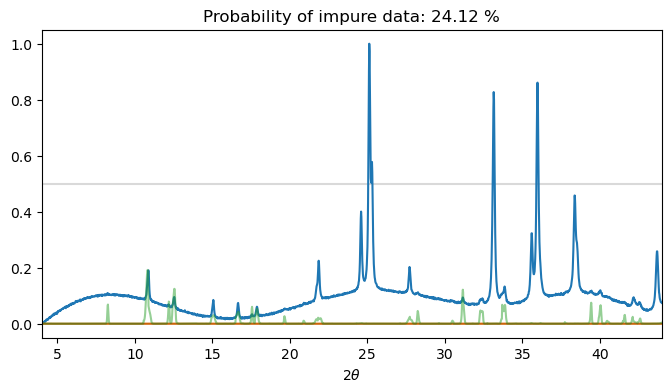

Show the code
import numpy as np
import torch
from torch import nn
import torch.nn.functional as F
from torch.utils.data import Dataset, DataLoader
import matplotlib.pyplot as pltIn my previous post, I replicated the results of an article by Chitturi and coworkers, who showed that convolutional neural networks can be used to determine unit cell edge lengths directly from PXRD data with a relatively good level of precision. I was able to both improve on their results and reduce the parameter count of the neural network by updating the architecture used.
In this post, we’ll look at an application of neural networks that I’ve not yet seen in the literature.
One thing that can severely hamper our ability to index a powder diffraction pattern is the presence of peaks coming from minority (i.e. impurity) phases in the sample. If the sample contains multiple crystalline phases then it can be extremely difficult or even impossible to index the data. Whilst many indexing algorithms have made progress towards dealing with impurities, it remains a challenge.
In this work, we will train a neural network to: 1. Determine if a PXRD dataset was produced by a single or multiple phases 2. Determine which peaks in the diffraction pattern come from the minority phase(s) in the sample
We will make use of the hybrid ConvNeXt-Transformer architecture we used in the last post. First, we’ll load the data as a pytorch Dataset object.
import numpy as np
import torch
from torch import nn
import torch.nn.functional as F
from torch.utils.data import Dataset, DataLoader
import matplotlib.pyplot as pltclass DiffractionData(Dataset):
def __init__(self,base_name, root_dir="./", idx=None, dtype=torch.float32):
if idx is not None:
self.crystal_system_numeric = torch.tensor(np.load(root_dir+base_name+"crystal_systems_numeric.npy")[idx], dtype=dtype)
self.hkl = torch.tensor(np.load(root_dir+base_name+"hkl.npy")[idx], dtype=dtype)
self.intensities = torch.tensor(np.load(root_dir+base_name+"intensities.npy")[idx], dtype=dtype)
self.unit_cell = torch.tensor(np.load(root_dir+base_name+"unit_cell.npy")[idx], dtype=dtype)
# Use extinctions rather than space groups
self.sg_number = torch.tensor(np.load(root_dir+base_name+"extinction_number.npy")[idx], dtype=dtype)
else:
self.crystal_system_numeric = torch.tensor(np.load(root_dir+base_name+"crystal_systems_numeric.npy"), dtype=dtype)
self.hkl = torch.tensor(np.load(root_dir+base_name+"hkl.npy"), dtype=dtype)
self.intensities = torch.tensor(np.load(root_dir+base_name+"intensities.npy"), dtype=dtype)
self.unit_cell = torch.tensor(np.load(root_dir+base_name+"unit_cell.npy"), dtype=dtype)
# Use extinctions rather than space groups
self.sg_number = torch.tensor(np.load(root_dir+base_name+"extinction_number.npy"), dtype=dtype)
def __len__(self):
return len(self.intensities)
def __getitem__(self, idx):
return self.crystal_system_numeric[idx], self.hkl[idx], self.intensities[idx], self.unit_cell[idx], self.sg_number[idx]
base_name = "4-44-CuKa1-data_4000_"
root_dir = "./"
device = torch.device("cuda:0" if torch.cuda.is_available else "cpu")
dtype = torch.float32Then we’ll define the data generation parameters
from powcodgen import patterns
from tqdm.auto import tqdm
# Data generation parameters
# ------------------------------------------------------------
ttmin = 4 # Minimum data twotheta angle
ttmax = 44 # Maximum data twotheta angle
peakrange = 3. # Buffer for peaks to move beyond the data range
datadim = 2048 # Number of points in PXRD histograms
same_hwhm = False # Impurity data has same peak shape & hwhm as the dominant phase
min_impurity_intensity = 0.02 # Minimum intensity for impurity peaks
max_impurity_intensity = 0.15 # Maximum intensity for impurity peaks
add_background = True # Include an amorphous background (Chebyshev)
# ------------------------------------------------------------
# Create the tensors used as the PXRD histograms
full_data = torch.linspace(ttmin-(peakrange/2), ttmax+(peakrange/2),
int(np.ceil((ttmax-ttmin+peakrange)/((ttmax-ttmin)/datadim))),
device=device, dtype=dtype)
x = (full_data[full_data <= ttmin+(peakrange/2)]).clone() - ttmin
plotdata = full_data[(full_data >= ttmin) & (full_data <= ttmax)].cpu()Now we are ready to define the model, which will be effectively the same as the ConvNeXt Transformer we developed in the previous post.
# ConvNeXt stuff
class GRN(nn.Module):
""" Global Response Normalization, proposed in ConvNeXt v2 paper """
def __init__(self, dim, eps = 1e-6):
super().__init__()
self.eps = eps
self.gamma = nn.Parameter(torch.zeros(1, dim, 1))
self.beta = nn.Parameter(torch.zeros(1, dim, 1))
def forward(self, x):
# x = (B, C, T)
# Want to average first over length (T), then divide by average channel (i.e. average of C)
# Divide the L2 norms by the average for each channel
Gx = x.norm(p=2, dim=2, keepdim=True) # (B, C, T) --> (B, C, 1)
Nx = Gx / Gx.mean(dim=1, keepdim=True).clamp(min=self.eps) # (B, C, 1) / (B, 1, 1) --> (B, C, 1)
return self.gamma * (x * Nx) + self.beta + x
class DropPath(nn.Module):
""" DropPath regularisation can be used if needed, as described here:
https://arxiv.org/abs/1605.07648v4
"""
def __init__(self, p: float = 0.5, inplace: bool = False):
super().__init__()
self.p = p
self.inplace = inplace
def drop_path(self, x, keep_prob: float = 1.0, inplace: bool = False):
mask = x.new_empty(x.shape[0], 1, 1).bernoulli_(keep_prob)
mask.div_(keep_prob)
if inplace:
x.mul_(mask)
else:
x = x * mask
return x
def forward(self, x):
if self.training and self.p > 0:
x = self.drop_path(x, self.p, self.inplace)
return x
def __repr__(self):
return f"{self.__class__.__name__}(p={self.p})"
class ConvNeXtBlock(nn.Module):
# A 1D ConvNeXt v2 block
def __init__(self, dim, drop_path_prob=0.0):
super().__init__()
self.dwconv = nn.Conv1d(in_channels=dim, out_channels=dim, kernel_size=7, groups=dim, padding=3)
self.norm = nn.LayerNorm(dim)
self.pwconv_1 = nn.Conv1d(dim, 4*dim, kernel_size=1, padding=0)
self.act = nn.GELU()
self.GRN = GRN(4*dim)
self.pwconv_2 = nn.Conv1d(4*dim, dim, kernel_size=1, padding=0)
self.droppath = DropPath(p=drop_path_prob)
def forward(self, inputs):
# Inputs has shape (B, C, T)
x = self.dwconv(inputs)
x = self.norm(x.permute(0,2,1))
x = x.permute(0,2,1) # Layernorm expects channels last
x = self.pwconv_1(x)
x = self.act(x)
x = self.GRN(x)
x = self.pwconv_2(x)
return inputs + self.droppath(x)
class DownSample(nn.Module):
def __init__(self, in_dim, out_dim):
super().__init__()
self.norm = nn.LayerNorm(in_dim)
self.down = nn.Conv1d(in_dim, out_dim, kernel_size=7, stride=2, padding=3)
def forward(self, x):
x = self.norm(x.permute(0, 2, 1)).permute(0,2,1)
x = self.down(x)
return x# Transformer stuff
class GLU(nn.Module):
def __init__(self, in_dim, out_dim, act=F.gelu, bias=True):
super().__init__()
self.linear1 = nn.Linear(in_dim, out_dim, bias=bias)
self.linear2 = nn.Linear(in_dim, out_dim, bias=bias)
self.act = act
def forward(self, x):
return self.act(self.linear1(x))*self.linear2(x)
class TransformerBlock(nn.Module):
def __init__(self, dim, heads, pos_length=129, dropout=0.1):
super().__init__()
self.heads = heads
self.qk = nn.Linear(dim, 2*dim)
self.v = nn.Linear(dim, dim)
self.mhsa_out = nn.Linear(dim, dim, bias=False)
self.GLU = GLU(dim, (dim*3)//2, bias=False)
self.linear_out = nn.Linear((dim*3)//2, dim, bias=False)
self.ln1 = nn.LayerNorm(dim)
self.ln2 = nn.LayerNorm(dim)
self.pos = nn.Embedding(pos_length, embedding_dim=dim)
self.dropout = nn.Dropout(dropout)
def mhsa(self, x):
B, T, C = x.shape
q, k = self.qk(x + self.pos(torch.arange(x.shape[1], device=x.device))).chunk(2, dim=-1)
v = self.v(x)
q = q.reshape(B, self.heads, T, C//self.heads)
k = k.reshape(B, self.heads, T, C//self.heads)
v = v.reshape(B, self.heads, T, C//self.heads)
x = F.scaled_dot_product_attention(q, k, v)
x = x.reshape(B, T, C)
x = self.mhsa_out(x)
return x
def ffwd(self, x):
x = self.GLU(x)
x = self.linear_out(self.dropout(x))
return x
def forward(self, x):
x = x + self.mhsa(self.ln1(x))
x = x + self.ffwd(self.ln2(x))
return x
class ConvNeXtTransformer(nn.Module):
def __init__(self, datadim=2048, depths=[2, 2, 6, 2], dims=[40, 80, 160, 320],
transformer_layers=6, attention_heads=2, drop_path_prob=0.1, dropout=0.1):
super().__init__()
self.depths = depths
self.datadim = datadim
self.downsample_layers = nn.ModuleList() # stem and 3 intermediate downsampling conv layers
self.initial_conv = nn.Conv1d(1, dims[0], kernel_size=7, stride=2, padding=3)
self.initial_norm = nn.LayerNorm(dims[0])
self.conv_layers = nn.ModuleList()
self.transformer_layers = nn.ModuleList()
self.cls_token = nn.Embedding(1, dims[-1])
for i, dd in enumerate(zip(depths, dims)):
depth, dim = dd
for d in range(depth):
self.conv_layers.append(ConvNeXtBlock(dim, drop_path_prob=drop_path_prob))
if i+1 != len(dims):
self.conv_layers.append(DownSample(in_dim=dim, out_dim=dims[i+1]))
for i in range(transformer_layers):
self.transformer_layers.append(TransformerBlock(dims[-1], attention_heads, dropout=dropout))
self.final_norm = nn.LayerNorm(dims[-1])
self.output_pure_impure = nn.Sequential(
GLU(dims[-1], 32),
nn.Linear(32, 1)
)
self.patch_classifier = nn.Conv1d(dims[-1], 16, kernel_size=1)
def forward(self, x, shapes=False):
x = self.initial_conv(x)
x = self.initial_norm(x.permute(0,2,1)).permute(0,2,1)
if shapes:
print(x.shape)
for l in self.conv_layers:
x = l(x)
if shapes:
print(x.shape)
x = F.gelu(x)
# Now concatenate the CLS token with the output of the convolutional layers
cls = self.cls_token(torch.arange(1, device=x.device)).squeeze().expand(x.shape[0], -1).unsqueeze(-1)
x = torch.cat([cls, x], dim=-1)
x = x.permute(0, 2, 1)
for l in self.transformer_layers:
x = l(x)
if shapes:
print(x.shape)
x = self.final_norm(x).permute(0,2,1)
if shapes:
print(x.shape)
x_pure_impure = self.output_pure_impure(x[:,:,0])
patch_pure_impure = self.patch_classifier(x[:,:,1:])
B, T, C = patch_pure_impure.shape
patch_pure_impure = patch_pure_impure.permute(0,2,1).reshape(B, T*C)
if shapes:
print(x_pure_impure.shape, patch_pure_impure.shape)
return x_pure_impure, patch_pure_impureimport math
def get_stats(outputs, ground_truth):
with torch.no_grad():
pred = (torch.sigmoid(outputs) > 0.5).type(torch.int)
TP = ((ground_truth == 1) & (pred == 1)).sum()
FP = ((ground_truth == 0) & (pred == 1)).sum()
TN = ((ground_truth == 0) & (pred == 0)).sum()
FN = ((ground_truth == 1) & (pred == 0)).sum()
precision = torch.nan_to_num(TP/(TP+FP))
recall = torch.nan_to_num(TP/(TP+FN))
f1 = torch.nan_to_num(2.*(precision*recall)/(precision+recall))
accuracy = torch.nan_to_num((TP+TN)/(TP+TN+FP+FN))
mcc = torch.nan_to_num(((TP*TN) - (FP*FN)) / torch.sqrt((TP+FP)*(TP+FN)*(TN+FP)*(TN+FN)))
return precision, recall, f1, accuracy, mcc
def get_lr(it):
# Taken from https://github.com/karpathy/nanoGPT/blob/master/train.py
# 1) linear warmup for warmup_iters steps
if it < warmup_iters:
return learning_rate * it / warmup_iters
# 2) if it > lr_decay_iters, return min learning rate
if it > lr_decay_iters:
return min_lr
# 3) in between, use cosine decay down to min learning rate
decay_ratio = (it - warmup_iters) / (lr_decay_iters - warmup_iters)
assert 0 <= decay_ratio <= 1
coeff = 0.5 * (1.0 + math.cos(math.pi * decay_ratio)) # coeff ranges 0..1
return min_lr + coeff * (learning_rate - min_lr)
# Training / validation code
def get_loss(iter_num, dataloader, model, optimizer, epoch,
train=True, show_pbar=True, impure_peak_threshold=2.5e-2,
plot=True, decay_lr=True, learning_rate=1e-3):
"""
Get the losses for an epoch. Toggle between the dataloaders so the same code can be recycled
for the training and validation sets.
"""
if show_pbar:
pbar = tqdm(dataloader)
else:
pbar = dataloader
logs = []
if not train:
model.eval()
for batch_cs, batch_hkl, batch_i, batch_cell, batch_sg_number in pbar:
# zero the parameter gradients
optimizer.zero_grad(set_to_none=True)
# forward + backward + optimize
if len(batch_cs) % 2 != 0 or len(batch_cs) % 3 != 0:
maxlength = 6*(batch_cs.shape[0]//6)
batch_cs = batch_cs[:maxlength]
batch_hkl = batch_hkl[:maxlength]
batch_i = batch_i[:maxlength]
batch_cell = batch_cell[:maxlength]
batch_sg_number = batch_sg_number[:maxlength]
calcdata = patterns.calculate_diffraction_patterns_with_impurities(
x,
full_data,
batch_cs.to(device),
batch_hkl.to(device),
batch_i.to(device),
batch_cell.to(device),
batch_sg_number.to(device),
same_hwhm=same_hwhm,
min_impurity_intensity=min_impurity_intensity,
max_impurity_intensity=max_impurity_intensity,
add_background = add_background,
)
combined, pure_patterns, impure_patterns, pure_impure, cs, cell, sgs, hkls = calcdata
pred_pure, pred_peaks = model(combined.unsqueeze(1))
impurepeaks = ((impure_patterns - pure_patterns) > impure_peak_threshold).type(dtype)
pure_impure_bce = F.binary_cross_entropy_with_logits(pred_pure.squeeze(), pure_impure)
pred_peaks_bce = F.binary_cross_entropy_with_logits(pred_peaks.squeeze(), impurepeaks)
# precision, recall, f1, accuracy, mcc
p_i_stats = get_stats(pred_pure.squeeze(), pure_impure)
patch_stats = get_stats(pred_peaks.squeeze(), impurepeaks)
loss = pure_impure_bce + pred_peaks_bce
if train:
# determine and set the learning rate for this iteration
lr = get_lr(iter_num) if decay_lr else learning_rate
for param_group in optimizer.param_groups:
param_group['lr'] = lr
loss.backward()
iter_num += 1
nn.utils.clip_grad_norm_(model.parameters(), grad_clip)
optimizer.step()
if show_pbar:
pbar.set_description_str(f"Epoch: {epoch+1} Loss: {loss.item():.3f} P/I Prec {p_i_stats[0].item():.3f} P/I Rec {p_i_stats[1].item():.3f} Patch Prec {patch_stats[0].item():.3f} Patch Rec {patch_stats[1].item():.3f}")
logs.append(torch.tensor([p_i_stats + patch_stats]))
if not train:
if plot:
for i in range(5):
plt.figure(figsize=(8,4))
plt.plot([4, 44],[0.5,0.5], c="k", alpha=0.15)
plt.plot(plotdata, combined[i].cpu())
plt.plot(plotdata, -1*impure_patterns[i].cpu())
plt.plot(plotdata, F.sigmoid(pred_peaks[i]).detach().cpu(), alpha=0.5)
plt.plot(plotdata, impurepeaks[i].cpu(), alpha=0.2, c="k")
plt.title(f"{100*F.sigmoid(pred_pure[i]).detach().item():.2f} %")
plt.show()
model.train()
return iter_num, logsSet up the training data and associated variables
batchsize = (128*3)//2
dataset = DiffractionData(base_name, root_dir=root_dir)
g = torch.Generator().manual_seed(42)
train_set, val_set = torch.utils.data.random_split(dataset, [0.8, 0.2], g)
train_dataloader = DataLoader(train_set, batch_size=batchsize, shuffle=True)
val_dataloader = DataLoader(val_set, batch_size=batchsize, shuffle=True)
print(f"Training samples = {len(train_set)}\nValidation samples = {len(val_set)}")Training samples = 230499
Validation samples = 57624Now let’s initialise the the model and optimizer. Rather than do extensive hyperparameter optimisation, I’ve just taken the hyperparameters for the optimiser used by Andrej Karpathy for his excellent nanoGPT model, which can be found here.
learning_rate = 6e-4 # max learning rate
num_epochs = 50
max_iters = (len(train_set)//batchsize) * num_epochs
print(f"Epochs: {num_epochs} Total gradient updates: {max_iters}")
weight_decay = 1e-1
beta1 = 0.9
beta2 = 0.95
grad_clip = 1.0 # clip gradients at this value
decay_lr = True # whether to decay the learning rate
warmup_iters = 2000 # how many steps to warm up for
lr_decay_iters = max_iters
min_lr = 6e-5 # minimum learning rate, should be ~= learning_rate/10
impure_peak_threshold = 5e-3
model = ConvNeXtTransformer(depths=[2,2,6,2],
dims=[4,8,16,32],
transformer_layers=8,
attention_heads=4,
drop_path_prob=0,
dropout=0,
).to(device)
print("Model parameters:",sum(p.numel() for p in model.parameters() if p.requires_grad))
optimizer = torch.optim.AdamW(params=model.parameters(), lr=learning_rate, betas=(beta1, beta2), weight_decay=weight_decay)Epochs: 50 Total gradient updates: 60000
Model parameters: 146257Let’s set this thing training!
show_pbar = False
all_train_metrics = []
all_val_metrics = []
best_val_mape = float("inf")
iter_num = 0
for epoch in range(num_epochs):
iter_num, train_metrics = get_loss(iter_num, train_dataloader, model, optimizer, epoch, train=True, show_pbar=show_pbar, impure_peak_threshold=impure_peak_threshold)
all_train_metrics.append(train_metrics)
train_metrics = torch.cat(train_metrics, dim=0).mean(dim=0)
_, val_metrics = get_loss(iter_num, val_dataloader, model, optimizer, epoch, train=False, show_pbar=show_pbar, impure_peak_threshold=impure_peak_threshold, plot=show_pbar)
all_val_metrics.append(val_metrics)
val_metrics = torch.cat(val_metrics, dim=0).mean(dim=0)
if show_pbar:
print("Best Val Pure / Impure classification:")
print(f" Precision: {val_metrics[0]:.3f} Recall: {val_metrics[1]:.3f} F1: {val_metrics[2]:.3f} Accuracy: {val_metrics[3]:.3f} MCC {val_metrics[4]:.3f}")
print("\nBest Val - Peak level classification:")
print(f" Precision: {val_metrics[5]:.3f} Recall: {val_metrics[6]:.3f} F1: {val_metrics[7]:.3f} Accuracy: {val_metrics[8]:.3f} MCC {val_metrics[9]:.3f}")
# Save the model
torch.save({'epoch': epoch,
'model_state_dict': model.state_dict(),
'optimizer_state_dict': optimizer.state_dict(),
}, "saved_models/Impurity_detection_ConvNeXt_Transformer.pth")The model took about 3 hours to train on my RTX 2060 GPU, with a modest batch size and 60k gradient updates. Let’s plot the model performance over time, and see how well it performed in terms of some commonly used metrics for binary classification tasks: - Precision and Recall - F1 (harmonic mean of Precision and Recall) - Accuracy - Matthews Correlation Coefficient (MCC)
# Calculate the average loss for each epoch and plot
train_av = torch.cat([x.mean(dim=0,keepdim=True) for x in [torch.cat(y, dim=0) for y in all_train_metrics]], dim=0)
val_av = torch.cat([x.mean(dim=0,keepdim=True) for x in [torch.cat(y, dim=0) for y in all_val_metrics]], dim=0)
for i, info in enumerate(["Pure / Impure classification", "Peak-level classification"]):
fig, ax = plt.subplots(ncols=5, nrows=1, figsize=(17,3.5))
fig.suptitle(info)
for j, metric in enumerate(["Precision", "Recall", "F1", "Accuracy", "MCC"]):
ax[j].plot(train_av[:,i*5+j])
ax[j].plot(val_av[:,i*5+j])
ax[j].set_title(metric)
if j == 2:
ax[j].set_xlabel("Epoch")
ax[j].legend(["Train","Val"])
plt.show()
val_av_max = val_av.max(dim=0).values
print("Best Val Pure / Impure classification:")
print(f" Precision: {val_av_max[0]:.3f} Recall: {val_av_max[1]:.3f} F1: {val_av_max[2]:.3f} Accuracy: {val_av_max[3]:.3f} MCC {val_av_max[4]:.3f}")
print("\nBest Val Peak-level classification:")
print(f" Precision: {val_av_max[5]:.3f} Recall: {val_av_max[6]:.3f} F1: {val_av_max[7]:.3f} Accuracy: {val_av_max[8]:.3f} MCC {val_av_max[9]:.3f}")
Best Val Pure / Impure classification:
Precision: 0.943 Recall: 0.890 F1: 0.892 Accuracy: 0.895 MCC 0.794
Best Val Peak-level classification:
Precision: 0.774 Recall: 0.408 F1: 0.511 Accuracy: 0.982 MCC 0.522Unsurprisingly, the performance of the model on the pure vs impure classification task is generally higher than that of the peak level classification task, where the model is trying to determine which peaks in the data come from the minority phase. This is most clearly seen in the case of the recall, where the model is only able to catch about 40 % of the impurity phase peaks. However, we still see pretty good performance on this challenging task with a very small model!
The accuracy for the peak-level classification task is somewhat misleading. This is readily explained by the fact that the data are very imbalanced for this task, the vast majority of points on the PXRD histogram not being associated with any impurity phase peaks.
Let’s now take a look at the information the model gives us, and check that the performance implied by these metrics is actually borne out in practice, and more importantly, if this model will actually be useful in the real world when trying to index a PXRD dataset.
def get_plots(dataloader, model, impure_peak_threshold=5e-3, number_of_plots=5):
"""
Get the losses for an epoch. Toggle between the dataloaders so the same code can be recycled
for the training and validation sets.
"""
model.eval()
for batch_cs, batch_hkl, batch_i, batch_cell, batch_sg_number in dataloader:
if len(batch_cs) % 2 != 0 or len(batch_cs) % 3 != 0:
maxlength = 6*(batch_cs.shape[0]//6)
batch_cs = batch_cs[:maxlength]
batch_hkl = batch_hkl[:maxlength]
batch_i = batch_i[:maxlength]
batch_cell = batch_cell[:maxlength]
batch_sg_number = batch_sg_number[:maxlength]
calcdata = patterns.calculate_diffraction_patterns_with_impurities(
x,
full_data,
batch_cs.to(device),
batch_hkl.to(device),
batch_i.to(device),
batch_cell.to(device),
batch_sg_number.to(device),
same_hwhm=same_hwhm,
min_impurity_intensity=min_impurity_intensity,
max_impurity_intensity=max_impurity_intensity,
add_background = add_background,
)
combined, pure_patterns, impure_patterns, pure_impure, cs, cell, sgs, hkls = calcdata
pred_pure, pred_peaks = model(combined.unsqueeze(1))
impurepeaks = ((impure_patterns - pure_patterns) > impure_peak_threshold).type(dtype)
for i in range(number_of_plots):
plt.figure(figsize=(8,4))
plt.plot([4, 44],[0.5,0.5], c="k", alpha=0.15)
plt.plot(plotdata, combined[i].cpu())
plt.plot(plotdata, -1*impure_patterns[i].cpu())
plt.plot(plotdata, F.sigmoid(pred_peaks[i]).detach().cpu(), alpha=0.5)
plt.plot(plotdata, impurepeaks[i].cpu(), alpha=0.2, c="k")
plt.xlabel("$2\\theta$")
plt.title(f"Probability of impure data: {100*F.sigmoid(pred_pure[i]).detach().item():.2f} %")
plt.xlim([4, 44])
plt.show()
break
model.train()
get_plots(val_dataloader, model, number_of_plots=5)
There’s quite a lot going on in these plots, so let’s break down what they show: 1. The title of the plot indicates the results of the binary pure / impure task. Anything over 50 % is considered to be a positive identification of a multi-phase dataset. The higher the number, the greater the probability assigned by the model. 2. The grey line at y=0.5 is just there to give a visual indication of when the model is predicting that a given peak comes from an impurity phase. Anything below this threshold is not considered a positive identification (though may still be of interest!) 3. The blue line is the data that was fed into the model - this is synthetic data, which may or may not contain peaks from multiple phases 4. The orange line is the ground-truth intensities for any impurity phase present in the data, reflected by the x-axis. This allows us to see if the input data did indeed contain impurities, and if so, where the peaks from the impurity phase should be most prominent. 5. The green line is the model’s prediction, for each point in the histogram, for if the intensity at this point can be mostly attributed to an impurity phase (after correcting for background scattering etc) 6. The pale grey lines are the ground-truth labels that the model was trained to predict. In an ideal case, the green line should completely overlap with these grey lines.
As we can see from the plots, the model does pretty well! In each of the examples plotted above, it correctly determined if the data came from a single phase or multiple phases. In terms of the peak-level classification task, we can see that the model, where impurity peaks are present, does pretty well at picking up peaks early in the data, but less well further on in the pattern. This isn’t too surprising due to several factors, such as the atomic form-factor fall off leading to lower intensities and the greater density of peaks leading to increased likelihood of peak overlap.
All in all, this looks like it could provide some useful information to end users if they are struggling to index a PXRD dataset. One possible cause of a failure to index the data could be the present of impurity peaks. If these can be eliminated from the indexing attempt, then it may become possible to index the data!
I’ve made the model weights available here. However, not everyone will want to run a python script every time they want to check a dataset, so I thought I’d also write a simple web-app and make it freely available and accessible to users.
The web-app can be found here, and it’s operation is described below.
The model was trained on data designed to approximate patterns collected on laboratory-based instruments using Cu Ka1 radiation, with a step size of 0.019 degrees and a range of 4 - 44 degrees \(2\theta\). Any data that does not meet these parameters clearly will need modification before it can be used by the model.
Any data collected with a different wavelength and/or step size will automatically be converted to the expected pattern for CuKa1 with the correct step size via interpolation. Any data below or above the expected range is trimmed. If the data range starts after 4 degrees \(2\theta\), then the first datapoint is used to fill in the blanks. This is an augmentation that was included in the data-generation code, and as such, the model should correctly ignore this.
Once the diffraction data is in the correct format for the model, the model is used to determine: 1. The probability that the pattern was produced by a single or multiple crystalline phases. The prediction is printed above the plot 2. An interactive plot showing the diffraction data, overlaid with the probability assigned by the model to each point on the histogram that the intensity (after accounting for the background) can be accounted for by an impurity phase.
Let’s see if the web-app may actually be useful for end users. In this publication, we reported the crystal structure of a co-crystal that was produced by grinding carbamazepine and indomethacin together. The structure was solved from PXRD data, relatively easily. However, the hardest part of the solution process was actually indexing the data - this was due to the presence of left-over carbamazepine and indomethacin within the polycrystalline sample that resulted.
Below is a screenshot showing the output of the model on the experimental data we collected on the cocrystal.
As we can see, the model correctly predicts that the data contains peaks from multiple phases, with a high degree of confidence. Let’s zoom in on the data and see which peaks are predicted to come from the impurities:
Anything over 0.5 is a positive prediction, so it looks like the peaks at ca. 10.2, 11.6, 13.1 and 17.2 should be treated as impurity peaks. There are several other peaks, which the model finds suspicious, though that don’t meet the 0.5 probability threshold. Let’s take a look at anything for which the model gives >0.3 probability of being an impurity peak as “suspicious”, and check the results in the table below:
| Peak \(2\theta\) position / \(^{o}\) | Probability of impurity | Is impurity line? | Model correct? |
|---|---|---|---|
| 9.0 | 0.39 | ✗ | ✓ |
| 9.5 | 0.31 | ✗ | ✓ |
| 10.2 | 0.53 | ✓ | ✓ |
| 11.6 | 0.57 | ✓ | ✓ |
| 12.1 | 0.47 | ✗ | ✓ |
| 13.1 | 0.64 | ✓ | ✓ |
| 15.3 | 0.45 | ✓ | ✗ |
| 16.7 | 0.38 | ✓ | ✗ |
| 17.1 | 0.40 | ✗ | ✓ |
| 17.3 | 0.54 | ✓ | ✓ |
| 21.0 | 0.47 | ✗ | ✓ |
| 22.4 | 0.31 | ✗ | ✓ |
I mark the model as being correct if the line is an impurity line, and it assigns > 0.5 probability, or the line is not an impurity line and it assigns < 0.5 probability. Otherwise, it is marked as being incorrect.
As we can see from the results, the model gets the majority of the assignments correct which is great! It also gives a bit of a “jumping off” point for the end user to look more closely at particular lines in the data, which may help to identify the impurities.
As part of the solution process for the paper I linked above, we ended up using TOPAS to extract the “pure phase” data for the cocrystal. If I pass this data through the model, we can clearly see that the model correctly recognizes that the data are pure and there aren’t any suspicious peaks!
In this post, we’ve developed a hybrid convolutional transformer model that can relatively reliably detect multi-phase PXRD data. This may be of interest to crystallographers who have patterns that are proving challenging to index!
The web-app described in the latter part of the post is freely available here - https://impuritydetector.streamlit.app/
The code for the web app and the pre-trained model is available here - https://github.com/mspillman/impurities